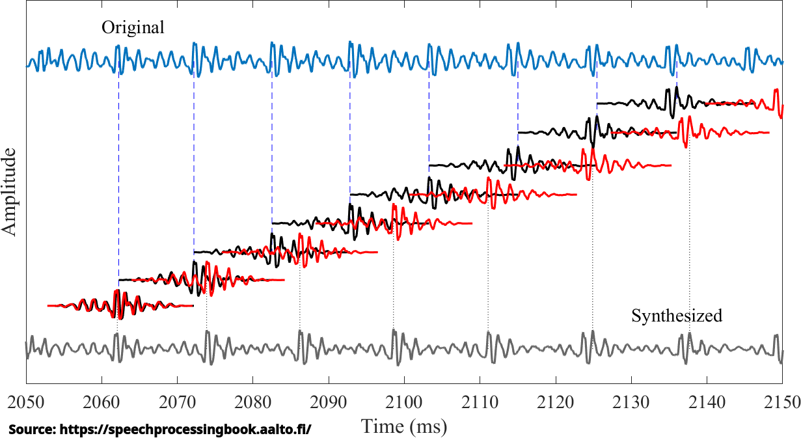
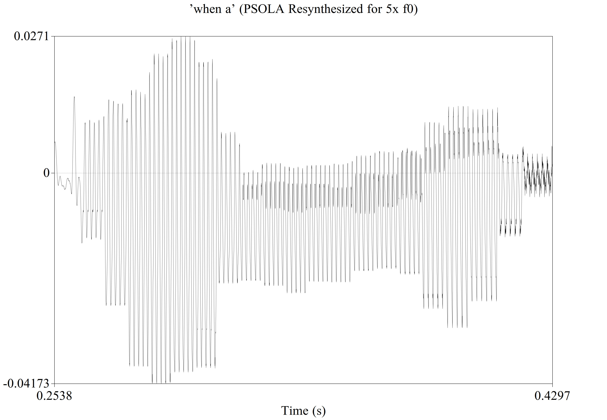
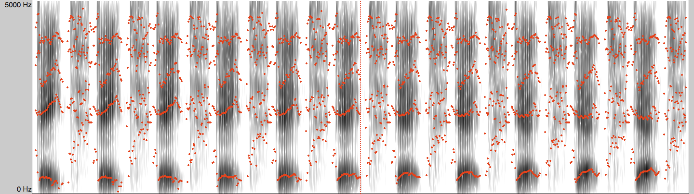

Useful for describing fluid movement (as in the vocal tract)

Useful for describing fluid movement (as in the vocal tract)
This is an apology
… and room for questions from last time
Pitch-finding techniques give us the frequency and characteristics of the source
LPC gives us the filter which is applied to the source
Both are matrices of numbers, which are easy to modify
What can we do with that information?
Turning speech into a computational numerical representation, and then back to speech again
We have Speech-to-Text, Text-to-Speech
This is Speech-to-Speech!
Modifying Pitch and Speed
Modifying Pitch and/or Speed
Source-Filter Resynthesis
The Dumbest and Most Exotic Voice Modification
Play the samples back at a different rate!
Decrease the speed of playing samples to slow the sound down
Increase the speed of playing samples to speed sound up
This is different from resampling, as we’re not adding or removing any points!
Base (00:08)
0.9x (00:07)
0.75x (00:06)
0.5x (00:04)
0.25x (00:02)
0.1x (00:00:81)
Base (00:08)
1.1x (00:09)
1.5x (00:12)
2x (00:16)
3x (00:24)
4x (00:32)
The period changes when you play cycles back faster, so we perceive a higher pitch
This affects all frequencies, not just voiced portions
This is useful for making ents and chipmunks
When most people play with pitch or duration, they’d rather be…
This is a much harder to do!
Luckily, there’s an algorithm for that!
An algorithm which permits you to modify the duration or pitch of a voice, independently of one another
There is a whole family of related algorithms for doing this, each with nuances, but we’re talking generally about the concept, and simplifying some
This can be used to modify pitch, or duration!
Again, we’re focusing on intuitions over math, and doing some black-boxing
Find the f0 of the signal and identify periods
Segment the sound into ‘grains’ with a filter, so that the edges smooth to zero
Overlap the grains more tightly to increase pitch, or more loosely to reduce pitch
Duplicate or remove grains to keep constant duration
Collapse the overlapped grains down into one signal



Overlap the grains more tightly to increase pitch
Overlap the grains more loosely to decrease pitch
Add or remove grains to keep duration constant
Then add it all up to the final sound!
1x
1.2x
2x
3x
4x
5x
1x
0.9x
0.75x
0.65x


Find the f0 of the signal and identify periods
Segment the sound into ‘grains’ with a filter, so that the edges smooth to zero
Keep the grain-spacing the same (thus preserving f0)
Duplicate or remove grains to increase the duration
Collapse the overlapped grains down into one signal
Base (00:08)
0.75x (00:06)
0.5x (00:04)
0.25x (00:02)
0.1x (00:00:81)
Base (00:08)
1.1x (00:09)
1.5x (00:12)
2x (00:16)
3x (00:24)
4x (00:32)
15x (2:00)
4x PSOLA (00:32)
4x Playback (00:32)
0.5x PSOLA (00:04)
0.5x Playback (00:04)
“Make this sentence 1.5x slower, while raising the pitch 1.5x”
Base Pitch and Duration
1.5x Pitch and Duration
You need a good, reliable pitch track
PSOLA for non-periodic sounds is tough
You need to filter precisely so that they add smoothly
You need to make sure the added segments are in the correct phase
You need to make sure that individual harmonics still align
You need to choose which grains to add or delete
You need even fancier approaches where there’s more than one f0 (e.g. two voices or instruments)
There will be artifacting, increasing with the amount of change
It will miss cycles and leave some bits sounding ‘wrong’
There are limits as to the amount of (good-sounding) possible change
But on the whole, it works pretty damned well!
… and it’s used all the time under a different name
An algorithm developed by Andy Hildebrand and marketed in 1997
Uses an approach similar to PSOLA to resynthesize voices
Automatically ‘corrects’ pitch to hit a certain target
Released in 1998 (one year after Autotune)
Autotune was briefly known as ‘the Cher Effect’
“We’re going to change f0 or duration, but try not to muck up the rest of the spectral information”
Harmonic matching and careful blending mean it’s usually pretty successful
But PSOLA doesn’t make any effort to disentangle the source and filter!
DO NOT USE LPC RESYNTHESIS TO MODIFY PITCH
Unmodified
1x f0 LPC
1.5x f0 PSOLA
1.5x f0 LPC
0.65x f0 PSOLA
0.65x f0 LPC
This is how phoneticians modify formants when creating stimuli!
Separate the source from the filter via Inverse Filtering
Modify the LPC, and then recombine!
You can change formant frequency, or bandwidth!
My Praat Handbook explains the process in 8.15
Date
Debt
11 Steps

It’s the very best way to change the quality of vowels and otherwise
It allows you to test hypotheses about filter shapes
It gives you incredible freedom to modify voices
There’s just one problem…
When you have a problem, and you decide to use LPC resynthesis, you have two problems
It’s common not to be able to ‘make the change’
Noise and artifacts are everywhere
You need to double check every stimulus to make sure it’s doing what you think it is
Come talk to me if you ever start down this dark road
All the error in pitch estimation
All the error in LPC estimation
Any error in the math or changes to the relevant formants
This requires the errors to be modeled to sound clean!
You’ll often get ‘robotic’ voices who don’t sound like the person they were
Bad modeling can create clicks and whistles
It sounds a lot like a bad cell phone call from the early 2000s
… but it’s great at making somebody sound non-human!
You don’t have to use a human source with the extracted filter
You can use any sound you’d like as the ‘source’

Harder, Better, Faster, Stronger (from ‘Discovery’)
Doin’ it Right (from ‘Random Access Memories’)
Written for a pivotal scene in Stanley Kubrick’s ‘Eyes Wide Shut’ (1999)
Actually just a Romanian Orthodox Priest singing, but reversed
You can get neat effects by just reversing audio
Lots of musicians play with this
Also called ‘Backmasking’ when you hide reversed messages
Mick Gordon, the Composer of DOOM (2016) is a gigantic troll
Modifying pitch and duration is really easy
PSOLA is really valuable for modifying pitch and/or duration
PSOLA is really complicated
Source-Filter Resynthesis allows you to modify just the filter of a word
Source-Filter Resynthesis sucks for everybody but Daft Punk
!stceffe taen yllaer sevig hceeps gnisreveR